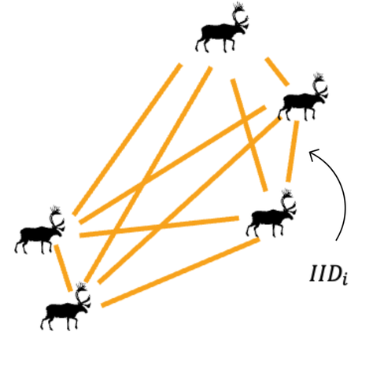

Introduction to shapeshiftr
Introduction.RmdBackground
This package was motivated by working with an animal telemetry dataset that spanned decades. We wanted to measure the link between spatial distribution and cohesion in group, but were limited to only location data. After some tinkering and reading the literature, we discovered that measuring the distances between pairs of individuals offered a promising way to understand this relationship.
The degree of social cohesion across a group depends on the distance between individuals, because greater separation reduces their ability to coordinate their actions.Their spacing reflects a balance between attraction (safety in numbers or finding mates) and repulsion (avoiding competition). When population size or habitat conditions change, that balance can shift—leading to changes in how the group is spaced out, and even in the shape of their overall range (like shrinking, stretching, or splitting apart).

Determining the range and spatial density of individuals fully requires extensive sampling. Our method adds to the existing toolkit of spatial analysis by offering summary statistics that require less sampling to describe key features of a population’s range and detect changes over time in spatial use. We use two different measures of the coefficient of variation (CV) in IID: individual-level and population-level. Both provide a scale-free measure that stays constant if density changes without changing the spatial distribution, or if the range changes symmetrically as the population shifts. However, changes in range shape and/or splitting into subpopulations alter these two CV measures, and their ratio, in distinct ways:

For the full description of the method and its application, see: Love & Otto (2025). Spatial Signatures of Population Cohesion. Methods in Ecology and Evolution. https://doi.org/
CV functions
This package has two streams of functions depending on the type of input.
Stream 1: non-sf data
If you have Cartesian coordinates in separate columns or vectors
whose distances are not substantially far enough apart to account for
the curvature of the earth, use cvpop(),
cvind() and cvatio(). These functions produce
a numeric value, or if used within dplyr verbs, a column, where each row
contains the CV of IID for a given sampling unit (time, season,
site).
-
cvpop: calculates the population-level CV of inter-individual distances (CV of all distances between all pairs of individuals) -
cvind: calculates the individual-level CV of inter-individual distances (CV of the average inter-individual distance across all individuals) -
cvratio: calculates the ratio of individual-level CV to population-level CV
Consider, as an example, a population with 10 individuals that has been sampled five times in one day for two years. The dataset includes the location (“x”, “y”), the year sampled (“year”), the identification of the individual sampled (“id”), and for illustrative purposes, a column containing data but not relevant to these functions (“random”).
library(shapeshiftr)
head(split_population)## x y year random id
## 1 49.14853 71.34843 1 char 1
## 2 59.24515 31.67412 1 char 2
## 3 47.17220 66.03379 1 char 3
## 4 57.60253 33.80525 1 char 4
## 5 37.18787 31.27433 1 char 5
## 6 67.75630 48.38934 1 char 6The data is spread across multiple years, we will use our CV functions in a pipe where the dataframe is grouped by year.
sp <- split_population %>% group_by(year) %>%
summarise(pop = cvpop(across(c(x,y))),
ind = cvind(across(c(x,y))),
ratio = cvratio(across(c(x,y))))
sp## # A tibble: 2 × 4
## year pop ind ratio
## <dbl> <dbl> <dbl> <dbl>
## 1 1 0.524 0.270 0.514
## 2 2 0.626 0.147 0.235From year 1 to year 2, the population-level CV has increased while the individual-level CV and the ratio has decreased, which is indicative of population fragmentation. Let’s visualize the data to check:
ggplot(split_population, aes(x,y)) +
geom_point(aes(color = as.factor(year))) +
theme_bw() +
labs(color = "year")+
coord_equal(xlim = c(0, 100))
We can see that the population has split from into two subpopulations from year 1 to year 2.
Stream 2: sf data
If you have a dataframe where the coordinates are stored within a
geometry column (an sf dataframe), use
iidist() and cvmetrics_sf().
-
iidist: measures the inter-individual distance between every pair of individuals within a given sampling unit (e.g., day, season, patch). This function takes ansfdataframe as input and returns a dataframe that retains the user-defined sampling unit columns (as specified innest_by), along with two bookkeeping columns identifying each unique pair and a column of the calculated distance between them. -
cvmetrics_sf: measures the population- and individual-level CV of IID and their ratio within a given sampling unit. This function takes a dataframe containing inter-individual distances for each unique pair within a given sampling unit and returns a dataframe with the population-level CV, individual-level CV, their ratio, and the sampling unit columns.
Consider again a population with 10 individuals that has been sampled
five times in one day for two years, where the dataframe is a
sf object. The dataset includes the year sampled (“year”),
a column containing data but not relevant to these functions (“random”),
the identification of the individual sampled (“id”), and the location
coordinates stored in a geometry column.
head(asym_split_sf)## Simple feature collection with 6 features and 3 fields
## Geometry type: POINT
## Dimension: XY
## Bounding box: xmin: 29.31003 ymin: -22.40374 xmax: 29.35845 ymax: -22.33439
## Geodetic CRS: WGS 84
## year random id geometry
## 1 1 char 1 POINT (29.31003 -22.35791)
## 2 1 char 2 POINT (29.35845 -22.40374)
## 3 1 char 3 POINT (29.31591 -22.37886)
## 4 1 char 4 POINT (29.323 -22.33439)
## 5 1 char 5 POINT (29.31635 -22.35588)
## 6 1 char 6 POINT (29.3342 -22.35854)We will first use iidist() to calculate the IID for each
unique pair-year, and then use the output as input for
cvmetrics_sf().
## # A tibble: 6 × 4
## year ID1 ID2 iidist
## <dbl> <fct> <fct> [m]
## 1 1 2 1 7123.
## 2 1 3 1 2406.
## 3 1 4 1 2936.
## 4 1 5 1 688.
## 5 1 6 1 2486.
## 6 1 7 1 6041.
cvs <- cvmetrics_sf(distances, distcol = "iidist", idcol = "ID1", grp_by = "year")## Joining with `by = join_by(year)`
head(cvs)## # A tibble: 2 × 4
## year cvpop cvind ratio
## <dbl> <dbl> <dbl> <dbl>
## 1 1 0.480 0.218 0.455
## 2 2 0.672 0.118 0.175From year 1 to year 2, the population-level CV has increased while the individual-level CV and the ratio has decreased, which is indicative of population fragmentation. Let’s visualize the data to check:
ggplot(asym_split_sf) +
geom_sf(aes(color = as.factor(year))) +
labs(color = "year")+
coord_sf(xlim = c(29.15, 29.45),crs = st_crs(4326),datum = NA, expand = FALSE)+
scale_x_continuous(breaks = scales::pretty_breaks(n = 3)) +
theme_bw()
We can see that the population has asymmetrically split from year one to year two, where a small proportion of the population has moved north, whereas the majority of the population moved slightly south.